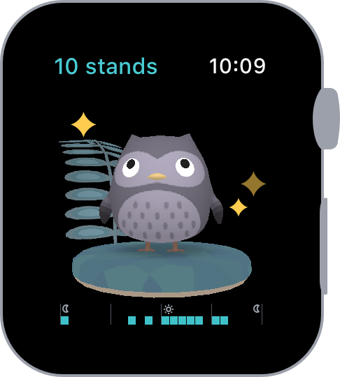
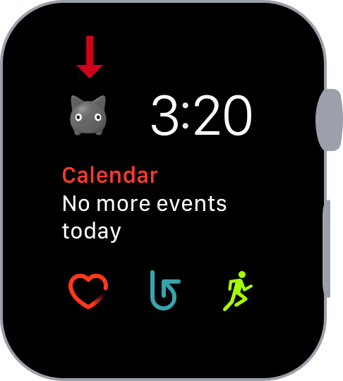
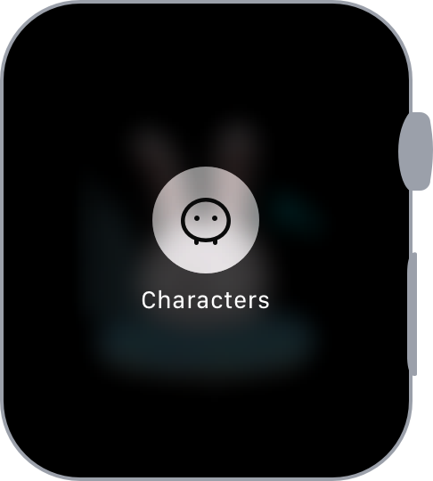

Help
How to use Apple Watch app
Using Standland for Apple Watch is simple.
Just open the app, then you can see how much you stand in a day. Turn the Digital Crown to turn the world.
If you stand in an hour, your companions stand. If you don't stand yet, they asleep. Wake them up by moving around in the real world!

You can choose which companion you want to display, and you can add a complication to your watch face to see your favorite tiny companion any time.

How to change companion
1. Force Touch to open the menu
2. Tap the button

3. Turn the Digital Crown to select a companion, and tap OK.

If your character list is not synced with your iPhone, please try rebooting your Apple Watch and iPhone, re-install your Apple Watch app.
Add a complication to your watch face
You can add a complication to your watch face to see your favorite tiny companion any time.
To add it, firmly press the watch face on your Apple Watch, or open the Apple Watch app on your iPhone.
More information: Change the watch face on your Apple Watch